Получение элемента Flash UI для отправки нам сообщения
На последнем этапе этого руководства будут подробно описаны необходимые шаги, необходимые для обработки событий, отправленных из события UI, которое мы представили во Flash UI ActionScript, со значением, которое мы установили в коде, с использованием узлов визуальных сценариев; эти узлы генерируются путем чтения файла UI Elements XML, который мы изменили ранее.
Для этого мы возьмем элемент UI, который мы расширили ранее, и добавим функциональность, используя событие, которое мы определили в элементе UI XML, аналогично тому, как мы подключили открытую функцию в Глава 7. Использование открытой функции.
Получение события и реагирование на него
Выполните следующие действия, чтобы получить и отобразить отладочное сообщение из события, которое запускается при нажатии кнопки:
Не рекомендуется смешивать подходы Flow Graph и Schematyc (экспериментальный), поскольку совместное использование экземпляров элемента UI может привести к запутанным результатам и проблемам, которые трудно отследить.
Flow Graph
- Добавьте UI → События → uiQuickStart → OnButtonPress узел вашего графика.
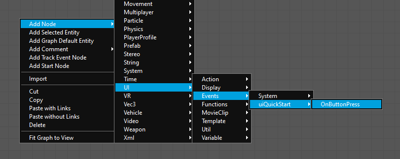
OnButtonPress - Подключите По событию выход и Название кнопки выход OnButtonPress узел событий в Показать и Сообщение входы узла DebugDisplayMessage.
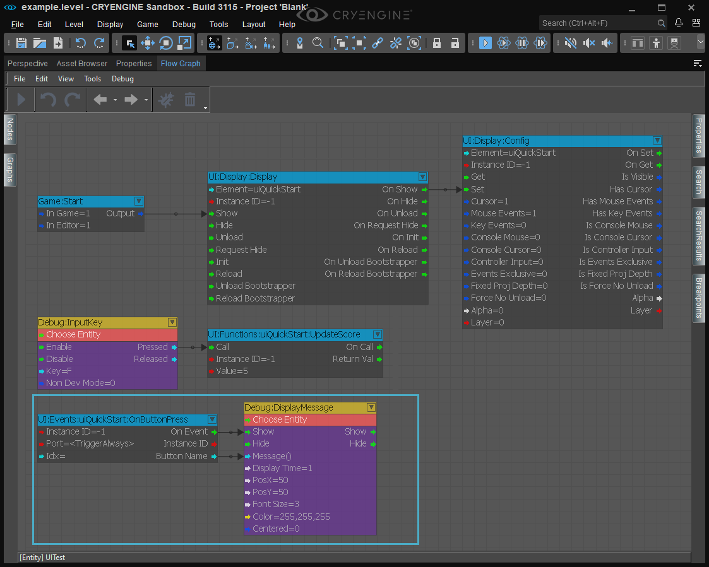
Подключение узла OnButtonPress к узлу Debug:DisplayMessage - Далее подключите На выставке вывод нашего узла UI:Display:Display в Установить ввод узла UI:Display:Config; также установить Элемент ввод узла UI:Display:Config для uiQuickStart и включить его Курсор и События мыши входы (установите их на 1).
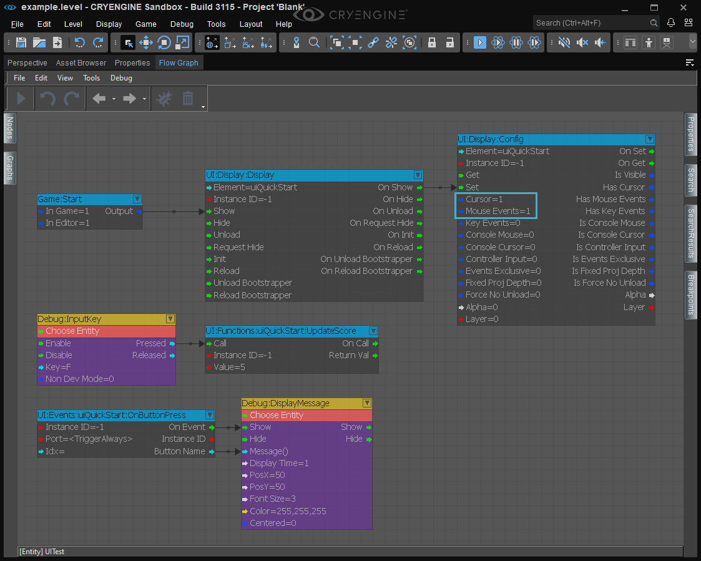
Включите входы событий курсора и мыши. - Как только вы войдете в игровой режим, вы заметите, что у вас есть контроль над курсором. Наведите курсор на нашу кнопку UI и нажмите левую кнопку мыши; В верхнем левом углу окна просмотра перспективы должно появиться сообщение с надписью «btnTest».
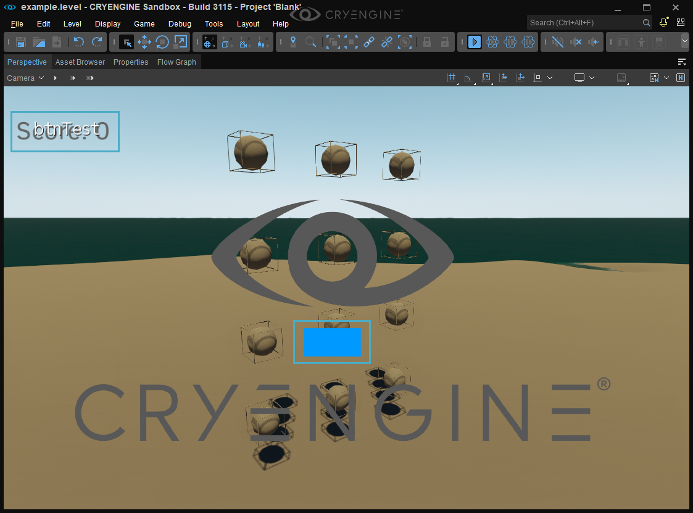
btnTest
Схема (экспериментальная)
- Добавьте компонент DebugDraw в свой график.
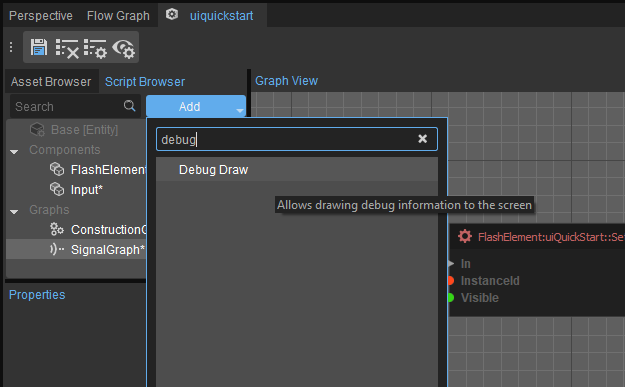
Компонент DebugDraw - Найдите и добавьте Сигнал → Приём → uiQuickStart → FlashElement:uiQuickStart → OnButtonPress узел.
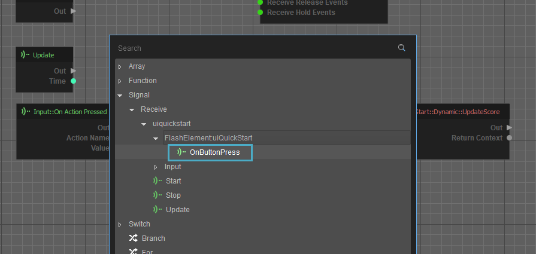
OnButtonPress - Далее добавьте Функция → Компоненты → Отладка Draw → Draw2DText и подключите его В и Тест булавки к Выход и ButtonName контакты узла OnButtonPress соответственно.
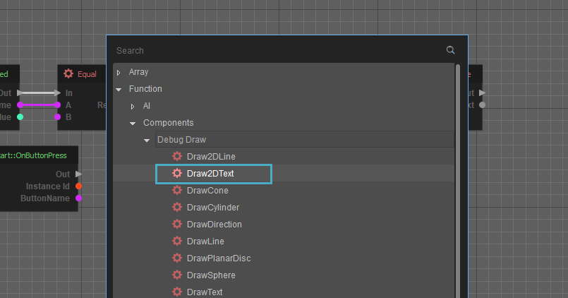
Draw2DText - Чтобы включить события курсора и мыши, мы добавим два из Функция → Компоненты → FlashElement:uiQuickStart → Установить флаг экземпляра узлы и соедините их последовательно после узла RegisterKeyboardAction.
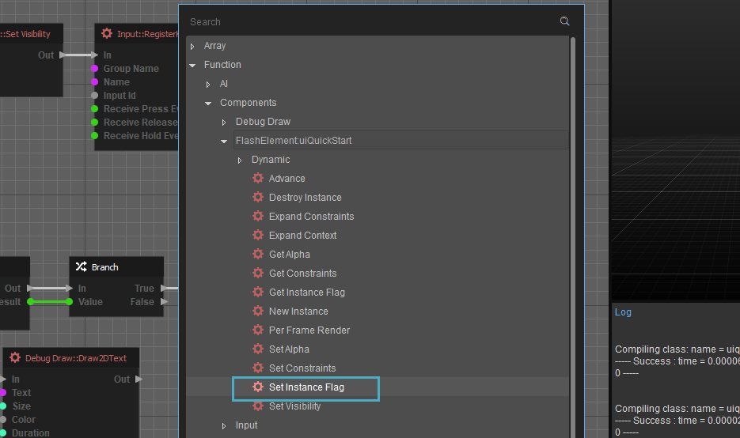
Узел «Установить флаг экземпляра»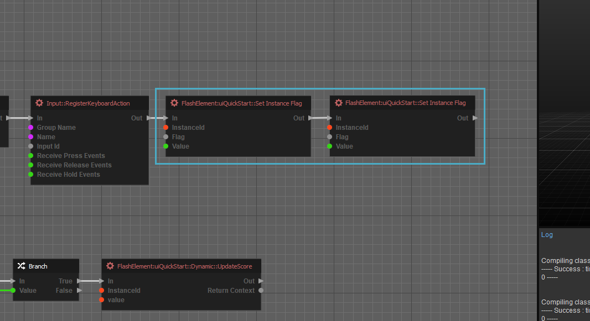
Последовательно соедините два флага установки экземпляра. - Теперь вам нужно выбрать каждый узел Set Instance Flag.
- На первом узле установите Флаг собственность Аппаратный курсор и проверьте Значение собственность.
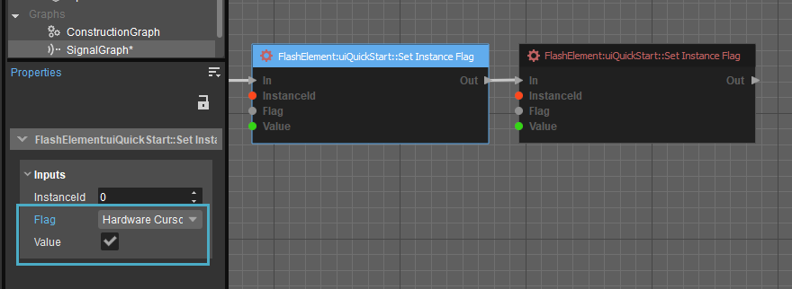
Установите флажок «Аппаратный курсор» и проверьте свойство «Значение». - На втором узле установите Флаг собственность События мыши и проверьте Значение собственность.
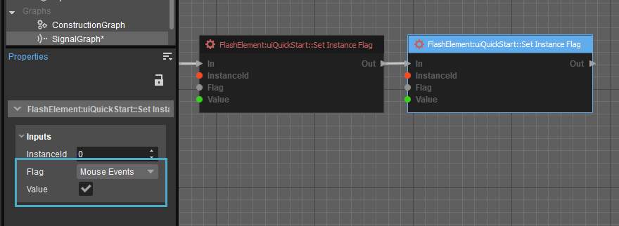
Установите флажок «События мыши» и проверьте свойство Value.
- На первом узле установите Флаг собственность Аппаратный курсор и проверьте Значение собственность.
- Как только вы войдете в игровой режим, вы заметите, что можете контролировать курсор. Наведите курсор на нашу кнопку UI и нажмите левую кнопку мыши; В верхнем левом углу окна просмотра перспективы должно появиться сообщение с надписью «btnTest».
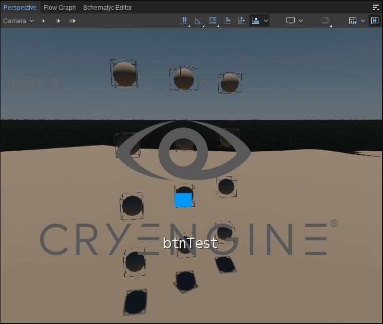
btnTest